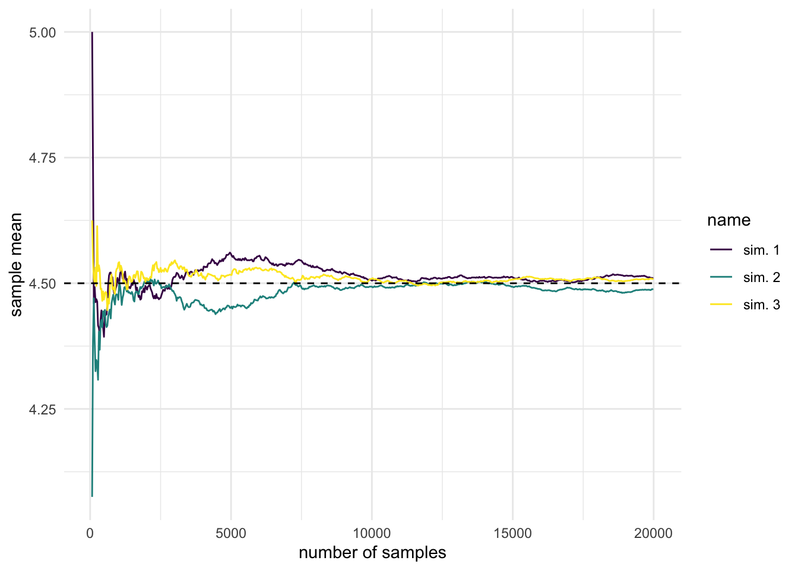
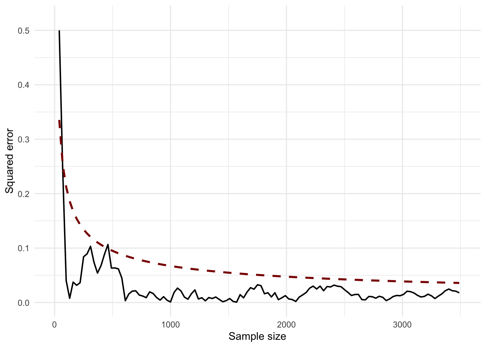
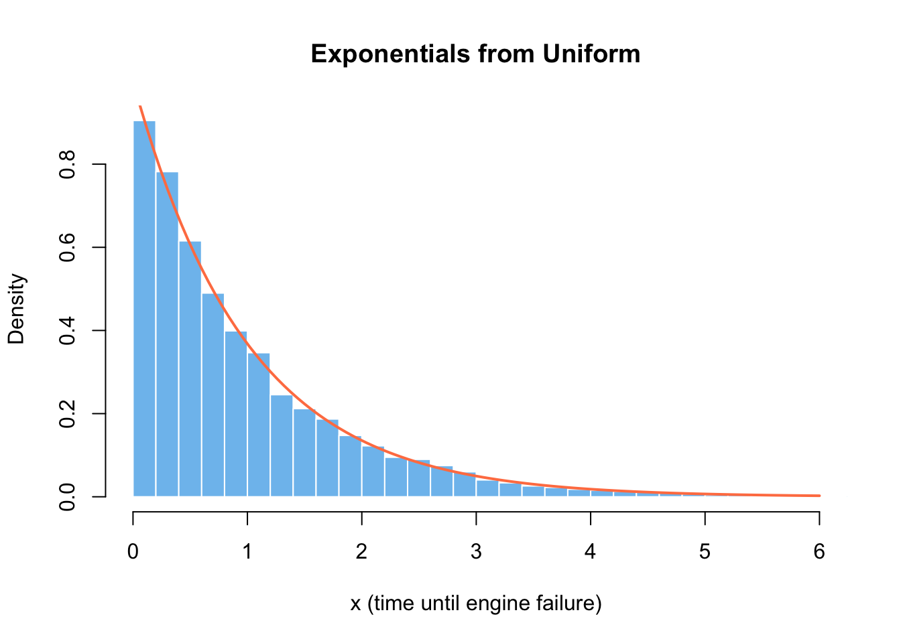
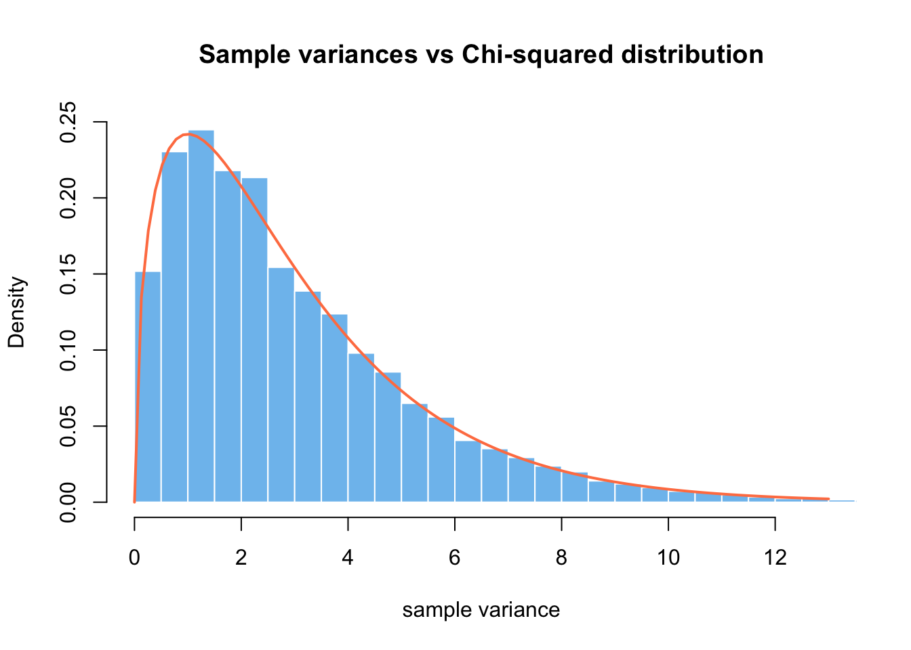
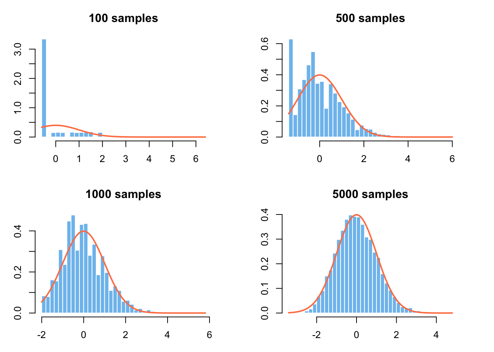

library(tidyverse)
set.seed(137)
nr_sim_pois <- 100000
lln_pois <- replicate(n = 3, {
pois_sim <- rpois(nr_sim_pois, 4.5)
seq(10, nr_sim_pois, 30) |>
sapply(\(x) pois_sim[1:x] |> mean())
}) |> data.frame() |> tibble()Core theorems for simulation
LLN, Universality of Uniform, CLT
In the first lecture, we learned how simulation can be useful in estimation, optimization, and for gaining insights into common economic processes. Last week, we reviewed the key constructs on which probability theory stands: the probability triple \((\Omega, \mathcal{F}, \mathbb{P})\) and random variable \(X:\Omega \rightarrow \mathbb{R}\). I hope I convinced you that it’s not “just theory”, but essential for understanding anything we’ll do next and that it has practical implications.1
1 The fact that I justify why the theory is needed, doesn’t exempt you from studying and understanding it. The difference is that you now know why is it important
In the first two hands-on labs, we used simulation techniques in R to solve the birthday problem and applied the Binomial distribution to the safari example. However, I didn’t justify or show why Monte-Carlo simulation works or how to draw random samples from a distibution, e.g. like rbinom() does.
Today, I will introduce you once again to the law(s) of large numbers, show how the universality of uniform theorem gives us a method for generating samples from common distributions. We will then discuss the central limit theorem, which is an essential result in statistical inference.2
2 In the case of CLT, we’ll use simulation in order to understand the theorem and apply this knowledge to a use-case during the lab
Practical implications of LLN
Laws of large numbers is a set of results in probability theory which justifies the Monte-Carlo approach to simulation and “makes it work”. You saw the simplest example of it when we discussed statistical stability and Bernoulli’s theorem in the context of probability triple.
Note that one can go into a lot of mathematical depth when studying LLNs or have just a conceptual understanding of it. I’m opting for a middle ground, in which you will get just enough theoretical precision, so that you don’t confuse it with the central limit theorem. We will simulate it in R, highlighting the idea of convergence in probability (of the sample mean to the true/population mean).3
3 Note that iid samples and finite variance are key assumptions and conditions
Show visualization code
lln_pois |>
mutate(nr_samples = 10 + row_number() * 30) |>
pivot_longer(cols = c("X1", "X2", "X3")) |>
mutate(name = case_when(
name == "X1" ~ "sim. 1",
name == "X2" ~ "sim. 2",
name == "X3" ~ "sim. 3"
)) |>
filter(nr_samples > 60 & nr_samples < 20000) |>
ggplot(aes(x = nr_samples, y = value, col = name)) +
geom_line() +
geom_hline(yintercept = 4.5, lty = "dashed") +
scale_color_viridis_d() +
labs(x = "number of samples", y = "sample mean") +
theme_minimal()
An immediate application of this result is that we get access to methods for numerical integration.
Before introducing laws of large numbers mathematically, let’s first discuss some of its practical implications. First and foremost, you should take great care when drawing conclusions about the mean from a small sample size, especially when comparing groups which have a different number of observations \(n_j\).
In the lab we will analyze a case-study of school performances on the final standardized test (SAT/ENEM) and you should not be surprised when you see most extreme performances for schools with a low number of students. Even if the schools are no different from population (in our simulation), we will get a large number of biased estimations for small schools.
On the bright side, we can use these theorems to our advantage any time we have to make small decisions in the very long run. Think of a casino as the classical example or an insurance company and why they always win on average given they stay in the business for a long time. You can also consider whether it’s foolish when people try to beat the stock market, i.e. do better in investment than a diversified set of index funds. You probably won’t own a casino, or work for insurance companies, or become a portfolio manager – but this insight could prevent you from shooting yourself in the foot.4
4 So, parents know something when they say not to gamble and not to recover the losses with more gambling.
Show code for squared error drop
lln_pois |> select(X1) |>
mutate(nr_samples = 10 + (row_number() - 1) * 30) |>
filter(nr_samples >= 10 & nr_samples < 10000) |>
mutate(
theoretical = sqrt(4.5) / sqrt(nr_samples),
simulated = sqrt((4.5 - X1)^2)
) |>
ggplot() +
geom_line(
aes(x = nr_samples, y = simulated),
ol="grey70", linewidth = 0.7) +
geom_line(
aes(x = nr_samples, y = theoretical),
lty="dashed", col="darkred", linewidth = 1) +
scale_color_viridis_d() +
lims(x = c(0, 3500), y = c(0, 0.52)) +
labs(x = "Sample size", y = "Squared error") +
theme_minimal()
In the case of \(X \sim Pois(\lambda)\), we know that \(\lambda\) is both the expectation and variance, hence the expected squared error will be \(\frac{\sigma}{\sqrt{n}} = \frac{\sqrt{\lambda}}{\sqrt{n}}\)
In simulation and Monte-Carlo methods, we simulate a large number of independent and identically distributed random variables. By design, we can use the long-run convergence for numerical integration, estimation, sampling, and optimization. In our little artificial world of simulation, we’re the casino.
LLN to the rescue from nasty integrals
In statistics, we encounter a lot of integrals of the following form, which do not have an analytical solution:
\[ \mathbb{E}_f[h(X)] = \int_\chi h(x) \cdot f(x) dx \] where \(f(x)\) is a (unbounded) probability density function, and \(h(x)\) a transformation of the random variable. Robert and Casella5 rightfully argue that methods like Simpson or trapezoid rule suffer from the fact that we don’t know what is the relevant area to integrate over.
This means that we should be careful when using integrate() and MASS::area() in R, and in general, any method which might be numerically unstable or fragile.
But things become very easy if we generate \(X_1, X_2, ..., X_n \overset{iid}\sim f(x).\) as we approximate with the empirical average. This scales well to multidimensional integrals which are so common in statistical modeling.
\[ \bar h_n = \frac{1}{n} \sum_{j=1}^n h(x_j) \]
5 Robert, Casella - Introducing Monte Carlo simulation with R, 2009
Maybe you didn’t realize, but we actually used this method for numerical integration in our safari case-study, where we computed the average number of people showing up as a function of the proportion of friends in people making reservations. In this week’s lab, we will see how can we use Monte Carlo integration for arbitrary functions, not just probability density functions.
Laws of large numbers
Now, let’s define more precisely what we mean by the “convergence” mentioned above and present mathematically the weak and strong law of large numbers.
Let \(X_1, ..., X_n \overset{iid}\sim p(X)\), with finite variance \(\mathbb{V}(X_j) < \infty\). The weak form states that for all \(\epsilon > 0\):6
6 In mathematics, when you see this, think that \(\epsilon\) is our choice and it can be arbitrarily small
7 I highly recommend Chapter 10 of Blitzstein and Hwang’s - Introduction to probability, 2nd ed (2019)
\[ \mathbb{P}(|X_n - \mu| > \epsilon) \overset{n \rightarrow \infty} \longrightarrow 0 \] This is precisely the definition of convergence in probability, often denoted as \(\bar X \overset{p} \rightarrow \mathbb{E}[X]\). It simply means that the average of a large number of random variables “stabilizes” to the true mean. The proof is made by using Chebyshev’s inequality, which gives the upper bound on the expression above: \(\sigma^2 / (n\epsilon^2)\), which drops to zero as \(n \rightarrow \infty\).7
Moreover, Slutsky’s theorem guarantees that if \(\bar X \overset{p} \rightarrow \mathbb{E}[X]\), then \(g(\bar X) \overset{p} \rightarrow g(\mathbb{E}[X])\) for real-valued, continuous functions \(g\).
We should remember, however, that the random variable \(X_j\) is not a single number, but a function \(X_j: \Omega \rightarrow \mathbb{R}\). Therefore, for any \(\omega \in \Omega\) we will have a sequence of numbers \(X_n(\omega)\) which might behave very differently and the idea of convergence in probability doesn’t tell us anything about the long-run behavior of any particular elementary event.8 This is relevant in practice, because we don’t always care only about the average and not all \(\omega\)’s are of equal interest to us.
8 You can check out this answer which clears out many confusions in the difference between the weak and strong law
The strong law of large numbers tells us that \(\forall \omega \in \Omega\), except a set \(B_0\) for which \(\mathbb{P}(B_0) = 0\), the sample mean converges pointwise \(\bar X_n(\omega) \rightarrow \mu\). Think of this formulation when you encounter almost sure convergence in readings.
See, this stuff is not that scary. Unless you go into advanced econometrics and statistical research, you will not need to rigorously prove all of this or study it from a measure-theoretic perspective. But as an applied decision scientist, there is no excuse for not understanding the laws of large numbers conceptually.
Empirical CDF. Nonparametric statistics
Empirical cumulative density functions9 are often used in nonparametric statistics, where we don’t want to make strong distributional assumptions about the population model (e.g. \(N(\mu, \sigma^2)\)).
We instead use iid samples to approximate the unknown, arbitrary population CDF \(F\). We can count on LLN to assure us that it converges to the true \(F\).
\[ \hat{F}_n(x) = \frac{1}{n} \sum_{j = 1}^n \mathbb{I}(X_j \le x) \] The sums of indicator functions means that we count how many X’s are less or equal than x. If you recall the last lab it’s precisely a Binomial distribution with \(n\) attempts and probability of success \(F(x)\).
9 In romanian, “repartitii”. You encountered them when we discussed random variables and probability triples.
Empirical CDF is also useful in quickly summarizing our data. In contrast with the histogram and kernel density estimations, we can quickly answer questions such as “what is the probability that a customer will spend less than 35$ in our store?”
Rabbit hole: Hoeffding inequality
In probability and statistics, we often don’t have an exact answer to some of the most important questions for modeling. But more often than not, statisticians can give us tighter or looser bounds on the answer. These statistical guarantees give us more confidence that our approach can work in principle.
For example, Hoeffding’s inequality is the simplest way we can think of a key idea in machine learning theory: probably approximately correct.10 Imagine you draw samples from a urn with green and red marbles, where we don’t know their true proportion \(\mu\), but we observe the sample mean \(\nu\). In a big sample, they will probably be close.
\[ \mathbb{P}[|\nu -\mu| > \epsilon] \le 2\exp(-2\epsilon^2N) \]
Now, think of \(\mu\) as the true, unknown function or pattern we want to learn: \(f:X \rightarrow Y\) (in reality being a joint distribution of inputs and target \(P(X, Y)\)). Each marble is a data point \(\mathbf{x}_i\) and the color is green if our model got it right. Therefore, Hoeffding’s inequality tells us the upper bound on verification for a single hypothesis (model with chosen parameter values). There is a long way to go from here to get some interesting results about learning, but it’s a good starting point.
10 If you’re interested in ML, I recommend Yaser Abu-Mostafa’s “Learning from Data” book and course.
Remember that the purpose of these deep dives is not for you to understand it right now, but to see whether something captures your attention and motivates to study in more depth. Also, when you will encounter these ideas in the future, in their appropriate context, you can refer back to these notes and tie it all together.
I give lots of examples from machine learning and statistical modeling, as it is my specialty and these models can be applied in any domain
Rabbit hole: Cauchy and Jensen
There are other inequalities that are useful in statistics, machine learning, and optimization you have to be aware of:
- Cauchy-Schwartz gives us a marginal bound on joint expectation, i.e. \(|E(XY)| \le \sqrt{E(X^2)E(Y^2)}\). It can be used to prove that correlation is between \([-1, 1]\), to prove the triangle inequality, and pops up in ML via cosine distance (a measure of similarity between two vectors).
- Jensen Inequality states that if \(g\) is a convex function, then \(E[g(x)] \ge g(E[X])\). It appears time and again in statistics, for example, in maximum entropy, Kullback-Leiber divergence (dissimilarity of two distributions), and log-probabilities (logistic regression, Bayesian estimation).
Universality of Uniform
For most practical intents and purposes, the section above outlines everything you need to know about the law of large numbers. Now, I will introduce a theorem which allows us to draw samples from most common distributions, assuming we have a way to generate pseudo-random uniformly distributed and independent numbers.11 The latter is a solved problem in R, just run runif(10000) and voila.
11 You can refer to this chapter by Tom Kennedy for details on how uniform iid samples can be generated from scratch and how to test if they’re any good.
Theorem: Universality of the Uniform
Let \(F\) be a continuous CDF (strictly increasing function on the support of distribution), its inverse \(F^{-1}:[0, 1] \rightarrow \mathbb{R}\) (quantile function), and \(U \sim Unif(0, 1)\).
- If \(X = F^{-1}(U)\), then \(X\) is a random variable with a CDF \(F\).
- If \(X\) is a r.v. with CDF \(F\). Then \(F(X) \sim Unif(0, 1)\)
We can show that (1) holds with the following straightforward relations. In the last step we leverage the fact that \(P(U \le u) = u\).
\[\begin{align} P(X \le x) & = P[F^{-1}(U) \le x] \\ & = P[U \le F(x)] \\ & = F(x) \end{align}\]
We can generalize the notion of an inverse so this theorem holds for an arbitrary CDF, not just continuous:
\[ F^-(u) = \inf \{ x | F(x) \ge u \} \]
The first part of the theorem sais we can construct X with the desired CDF, by plugging U (uniformly distributed random samples) into the quantile function. The second part is less interesting in practice, but has to be also true – if we plug a random variable X into its own CDF, we’ll get U.12
12 Be careful, in this second part there is some potential confusion if you’re not careful with notation: it’s \(F(X)\), not \(F(x)\).
To make sense of the second statement, remember that a function of a random variable is also a random variable. We know that \(U = F(X)\) should have values \(u\) between 0 and 1.
\[\begin{align} P(U \le u) & = P[F(X) \le u] \\ & = P[X\le F^{-1}(u)] \\ & = F(F^{-1}(u)) = u \end{align}\]
Exponential (Casella and Robert, pg 44)
If \(X \sim Exp(\lambda = 1)\), then its CDF is \(F(x) = 1 - e^{-x}\). If we assign it to \(u\) and solve for \(x\), we’ll get a way to generate samples from the exponential distribution \(x = -log(1 - u) = -log(u)\). The latter part is true for the range \([0, 1]\), since both \(U_{[0, 1]}\) and \(1-U_{[0, 1]}\) are uniform.
Code
-log(runif(1e4)) |>
hist(
col = "skyblue2", border = "white", breaks = 50,
freq = FALSE, main = "Exponentials from Uniform",
xlab = "x (time until engine failure)",
xlim = c(0, 6)
)
curve(dexp(x), col = "coral", lwd = 2, add = TRUE) 
I kind of lied to you by implying that the universality of uniform is everything we need to draw samples from distributions. The technical details to make it computationally efficient are not easy at all. Moreover, there are accept-reject methods when everything else fails. You can refer to Alexandru Marioarei’s extensive guide on simulation and Casella/Robert’s Chapter 2 and 3 for a much more in-depth explanation and demonstration.
I think the best time to cover these behind-the-scenes details is only after you are comfortable and confident with actually doing the simulations to solve practical problems. Only then, it makes sense to ask how exactly do R or Python implementations work.
Stories of Beta and Gamma
Let’s take this opportunity to highlight the story and applications of the Exponential distribution. It is the continuous counterpart to the geometric distribution, which counts the number of failures before the first success in a sequence of coin flips. In the case of exponential, \(\lambda\) is the rate at which the events happen per unit of time. At a first glance, this makes it a good candidate for modeling waiting times, lifetimes or survival, time until a single (hardware) failure.13
13 You can check out this presentation for a more in-depth explanation of \(Expo(\lambda)\) applications
However, the exponential has a key assumption and property of being memoryless, which doesn’t hold in the real world neither for waiting times, nor for machine lifetimes. If you remember your physics classes from highschool, radioactive decay does have this property and the exponential model is helpful there.
Otherwise, we will use it as a building block in more flexible distributions which can accommodate more realistic assumptions – similarly as we did with Bernoulli and Binomial. We can use the probabilistic relations between the following distributions in order to simulate them not from the Uniform, but from \(X_i \overset{iid}\sim Expo(1)\).14 Note that all parameters of the distributions below take values in \(\mathbb{N}^* = \{1, 2, ...\}\)
14 Even though we can, it doesn’t mean it’s a good idea or that it’s efficient
\[\begin{align} Y & = \beta \sum_{j=1}^\alpha X_j \sim Gamma(\alpha, \beta) \\ Y & = \sum_{j=1}^a X_j / \sum_{j=1}^{a+b} X_j \sim Beta(a, b) \\ Y & = 2\sum_{j=1}^\nu X_j \sim \chi^2_{2\nu} \end{align}\]
I don’t mention these relations as an academic exercise, but because we will heavily use these distributions in statistical modeling. Beta(a, b) takes values between 0 and 1 and can have different shapes based on the choices of its parameters – which makes it a good choice in modeling proportions.
Later in the course I will introduce the Beta-Binomial model, which is a Bayesian alternative to the frequentist confidence intervals you’re familiar with.15 You should also know that there is a Beta regression, which can be used to model a proportion directly (not binary outcomes \({0, 1}\)). For example, how would you deal with modeling the share of income which is spent on housing?
15 Where the Beta distribution will represent our prior beliefs about the distribution of the unknown proportion \(\theta\)
You can think of Gamma as the distribution of time until a machine breaks down, but where you need multiple pieces to fail. It is more flexible than the exponential, therefore can fit a larger number of patterns we observe in the real world.
We will use it to represent the uncertainty in the rate \(\lambda\) of Poisson distributed outcomes (number of events in an unit of space/time). The resulting Gamma-Poisson model is a key building block for modeling counts of rare events like asthma deaths, kidney cancers, and deaths from horses in the Prussian army.16
16 Do you know another model for this task? Linear regression won’t do the job, but you might encounter Poisson regression and generalized linear models in the future
Lastly, this relationship of the exponential to Chi-squared isn’t very helpful. We would be better served by thinking of it as a sum of squared iid Gaussian random variables \(X_1, ..., X_k \overset{iid} \sim N(0, 1)\).
\[ Y = \sum_{j=1}^k X_j^2 \sim \chi^2_k \] You might remember \(\chi^2_k\) from your hypothesis testing classes, as it appears when talking about the distribution of the sample standard deviation estimators: \(S^2 = \frac{1}{n - 1}\sum_{i = 1}^n (x_i - \bar x)^2\). This should immediately make you worry if assuming normally distributed samples is appropriate.
\[ \frac{n - 1}{\sigma^2}S^2 \sim \chi^2_{n-1} \]
Code
sample_size <- 4
sigma <- 9
lots_of_sigmas <- replicate(10000,
(sample_size - 1) / sigma^2 * sd(rnorm(sample_size, mean = 5, sd = 9))^2
)
hist(lots_of_sigmas,
col = "skyblue2", border = "white", breaks = 50, freq = FALSE,
main = "Sample variances vs Chi-squared distribution",
xlab = "sample variance",
ylim = c(0, .25), xlim = c(0, 13)
)
curve(dchisq(x, df = 3), col = "coral", add = TRUE, lwd = 2)
As a segway to the next section, one can’t overstate the importance of Gosset’s student/t distribution and the idea of sampling distribution of the sample mean in statistics.17 If \(X_0 \sim N(0, 1)\) and \(Y \sim \chi^2_k\), then
17 Take a bit of time to read about Gosset’s story of inventing a method for hypothesis testing in quality assurance of Guiness’ beer factories.
\[ Z = \frac{X_0}{\sqrt{Y / k}} \sim t_k \]
This should remind of the quantity you have seen a lot in your statistics’ classes, when the population variance is unknown and let’s be honest, population variance is always unknown. This result is exact, not asymptotic, but it requires our sample to be iid Gaussians. Can you tell which other assumptions are we implicitly making when using a t-test?
\[ \frac{\bar x - \mu}{ \sqrt{\frac{\hat \sigma^2} { n } }} \sim t(n-1) \]
The sample mean, technically, is an estimator \(t : X \rightarrow \hat\theta\). Let \(\theta\) be the true but unknown population parameter, which uniquely characterizes the data generating process. Then, the estimator is a function which takes as an input the sample X (viewed as random variables) and returns an estimate (statistic) of the population parameter. Remember that a function of a random variable is also a random variable.
In practice, since we work with a single, finite sample and would like to know how “surprising” is it to observe that “extreme” of a sample mean due to sheer chance (if null hypothesis is true).18
18 We will pay much more attention and apply more rigor to this question in the following weeks
Central Limit Theorem
In the law of large numbers, we saw how the mean of a sequence of random numbers \(X_1, X_2, ... \overset{iid} \sim p\), with \(\mathbb{V}(X_j) < \infty\), converges in probability to the expectation \(\mu = \mathbb{E}[X_j]\). This result motivates the viability of the Monte-Carlo approach, but tells us nothing about how does \(\bar X_n\)’s distribution looks like along the way. Therefore, the central limit theorem is an essential result for statistical inference.
\[ \sqrt{n} \bigg( \frac{\bar X_n - \mu}{\sigma} \bigg) \overset{d}\longrightarrow N(0, 1) \]
CLT states that for (very) large \(n\), the distribution of standardized sample means approaches the normal distribution, no matter how weird the distribution of individual \(X_j\) (as long as it has finite variance). This is remarkable, but we can’t celebrate for long, since we might not have sufficient data to leverage CLT for an accurate estimation.
Also, you have to remember that the theorem is concerned only with the central tendency and sais nothing about the tails, which is tremendously important in risk management, finance, and extreme value theory. Taleb Nassim wrote whole three books hammering down this point and the importance of (fat) tails.19
19 Fooled by randomness, Black Swan, and Antifragile
Code
skewdata <- c(
replicate(2000, 0), # most customers buy nothing
rexp(200, rate = 1 / 10), # some will buy a moderate amount
seq(100000, 500000, 50000) # some very large purchases or errors
)
mu <- mean(skewdata)
sig <- sd(skewdata)
sim_purchases <- function(nr_samples) {
Z <- replicate(10000, {
Xbar <- sample(skewdata, nr_samples, replace=TRUE) |> mean()
(Xbar - mu) / (sig / sqrt(nr_samples))
})
Z
}
par(mfrow = c(2, 2), mar = c(3, 3, 3, 3))
for (n in c(100, 500, 1000, 5000)) {
hist(sim_purchases(n),
col = "skyblue2", border = "white", breaks = 40,
probability = TRUE,
main = paste0(n, " samples"), xlab = ""
)
curve(dnorm(x), add = TRUE, col = "coral", lwd = 2)
}
Imagine the following scenario, which might not be completely unrealistic in an e-commerce. We want to design an A/B test for the new cross-sell feature in order to decide if we launch it for all customers or not. The main KPI we optimize for is average order value. Before we start the experiment, we want to compute how many samples do we need in order for the experiment to answer our question – that the feature brings relevant (in $) and significant results.20
20 We will come back to this question, as it is tremendously important and often done incorrectly in practice.
So we choose \(\alpha\) (type I error), \(1 - \beta\) (statistical power), \(\Delta\) (minimum effect size of interest) and we plug those into the R function power.t.test() to get the necessary sample size. But you remember in horror that the t-test assumes normal data and homogenous variance.
So you do a simulation which captures the typical features of customer behavior, in order to assess if this approach would work at all in principle:
- Most visitors buy nothing in a browsing session (or ever). This leads to a zero-inflated distribution
- The average order value is skewed, with the majority of customers having smaller orders
- There might be a few customers who spend a lot, i.e. clear outliers
When it comes to the applications of CLT in simulation, we can use it to assess the convergence of our numerical calculation and draw confidence intervals or “confidence bands” for each fixed number of iterations. We did a rudimentary implementation of this in the sensitivity analysis of the safari case-study.
Rabbit hole: stock market fluctuations
If you want to dive a bit deeper into CLT and LLN, I recommend the following example from Blitzstein and Hwang, pg. 475, ex. 10.3.7.
Each day, a very volatile stock rises 70% or drops 50% in price, with equal probabilities and with different days independent. Let \(Y_n\) be the stock price after n days, starting from an initial value of \(Y_0 = 100\).
- Explain why \(\log Y_n\) is approximately Normal for a large n and state its parameters.
- What happens to \(E(Y_n)\) as \(n \rightarrow \infty\)?
- Use the law of large numbers to find out what happens to \(Y_n\) as \(n \rightarrow \infty\)